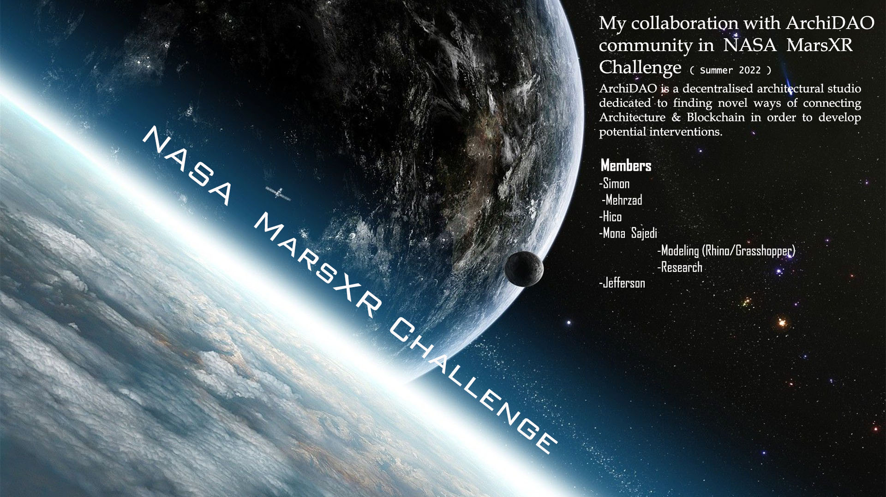

I collaborated with the ArchiDAO community during the NASA MarsXR Challenge (Summer 2022). ArchiDAO is a decentralized architectural studio dedicated to exploring new ways of connecting architecture with blockchain technologies in order to develop future-oriented design interventions.
A collaborative research and prototyping project exploring immersive simulation, human–space interaction, and environmental performance within NASA’s MarsXR framework. This project integrates spatial UX design, real-time visualization, and computational workflow development for extraterrestrial architectural scenarios.
This project was developed for the NASA MarsXR Challenge — an initiative focused on creating highly detailed immersive simulations of Martian habitats, EVA scenarios, and human–environment interactions. My contribution focused on: